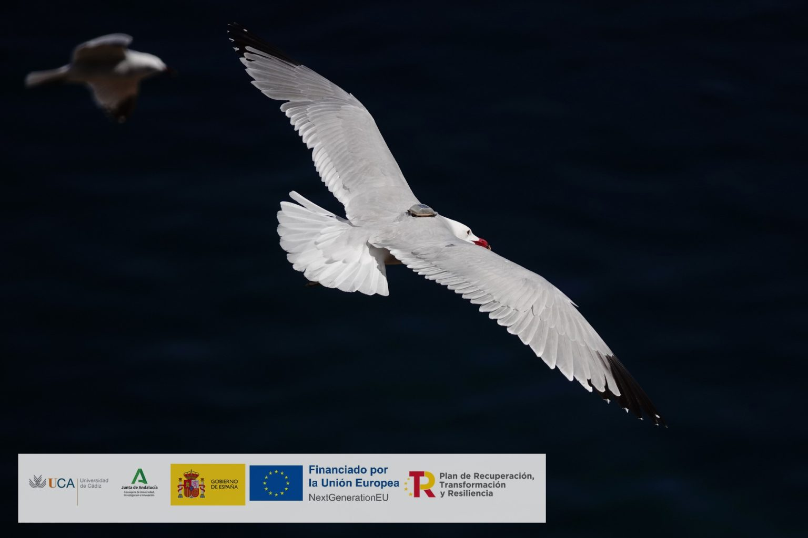
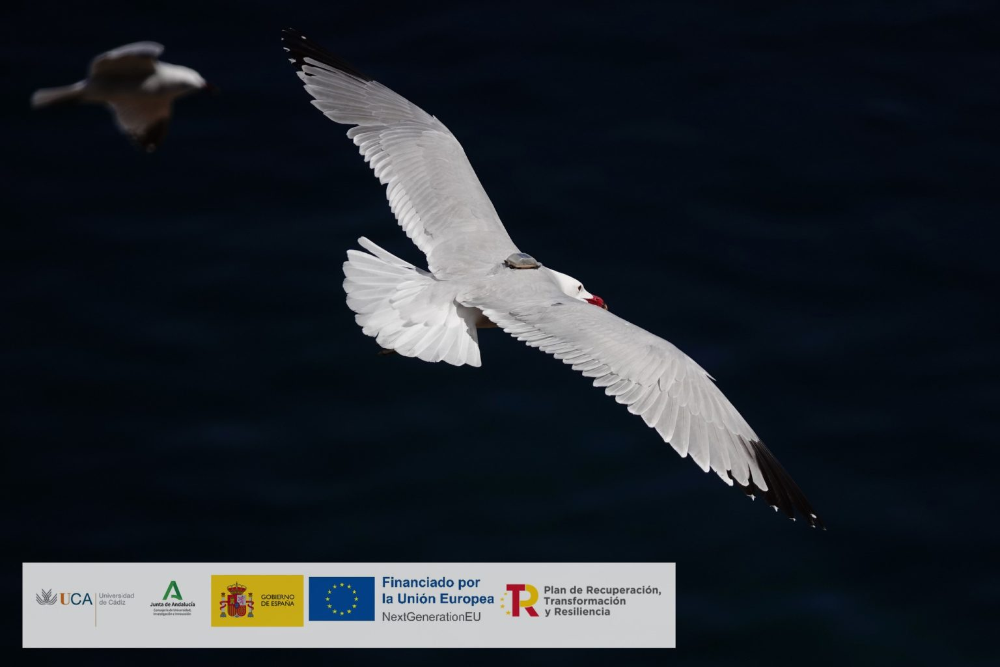

Actuaciones de marcaje a aves marinas
El pasado 4 de abril llevamos a cabo el marcaje de 20 ejemplares de gaviota de Audouin (Ichthyaetus audouinii) en la colonia reproductora ubicada en la Ciudad Autónoma de Ceuta.
 Leer másEl pasado 4 de abril llevamos a cabo el marcaje de 20 ejemplares de gaviota de Audouin (Ichthyaetus audouinii) en la colonia reproductora ubicada en la Ciudad Autónoma de Ceuta.
 Leer más